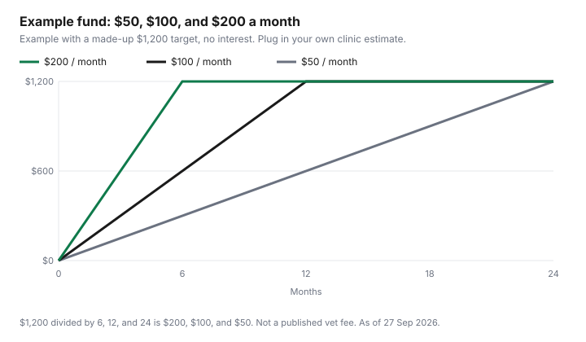

Pets · Canada
How Much Should a Canadian Pet Emergency Fund Hold?
A Canadian pet emergency fund should hold the written estimate your clinic gives for an emergency visit or procedure, plus the part of an insured bill you would still pay. Fill it with a monthly transfer: a $1,200 target is $100 a month over 12 months. The useful target is not a national guess. It is the estimate your clinic will put in writing for the emergency visit or the procedure you are actually trying to survive, plus the part of an insured bill that would still be yours. This page is the sinking fund: how to set that number, where to hold it, how to fill it, and what to do if the bill arrives early. Whether a policy is worth the premium is the insurance guide. How to ask for the estimate, in Ontario, is the vet-bill guide. Education only, not veterinary or deposit advice.
Key takeaways
- The 2025 Ontario Veterinary Medical Association canine and feline PDFs returned a not-found page on 27 Sep 2026. They are not the target on this page.
- The Competition Bureau’s page of 30 Oct 2024, quoting older association estimates, describes additional emergency trips of $215 to $1,615 a year. Use that as context. Use your clinic’s estimate as the target.
- Monthly transfer equals the target divided by 6, 12, or 24. An illustrative $1,200 target is $200, $100, or $50 a month. That $1,200 is a placeholder, not a published fee.
- Park the cash where you can reach it quickly and will not spend it on groceries. The savings-account guide is the parking decision. A TFSA is allowed only if you understand the room rules.
- Ontario SPCA clinics, on the page checked 27 Sep 2026, do not treat emergencies. A $36 microchip on that fee table is not an emergency fund.
Setting a target from real estimates: your vet's emergency and common-procedure fees
Phone or email the clinic that would actually see the animal and ask for a written range for the visit you fear: an after-hours emergency exam, the procedure your vet has already mentioned, or the deductible-plus-coinsurance on a policy you hold. Ask what is inside the range and what is extra, such as bloodwork, an overnight stay, or medication.
A single number with no contents is not a target. Two numbers, low and high, are. If you insure, the fund’s job is the part the wording will not pay. Add the deductible, your share after the reimbursement percent, and a buffer for a line the policy excludes. The policy guide is how to find those three items. Do not add a year of food and a year of vaccines into the same envelope. Those are routine. The sinking-fund guide is the habit of naming each envelope.
Published ranges are context, and the vintage matters. The 2025 association PDFs are not cited here. They redirected to a not-found page. The Competition Bureau’s market piece of 30 Oct 2024 says the Ontario Veterinary Medical Association estimates the total cost of owning a puppy at about $5,200 a year and an adult dog at about $4,137, and cats as high as $3,540 for a kitten or $2,849 for an adult cat. A caption on that page sources $2,849 to the association’s 2023 feline cost-of-care material. The same page says annual check-ups can account for $85 to $130 of “this total,” and that emergency trips can cost an additional $215 to $1,615 per year. Those sentences are the Bureau’s summary of older estimates. They are not a 2025 fee schedule, and they are not one invoice. A household that saves only the bottom of the emergency range, $215, has not funded the top of that same range. A household that saves the Bureau’s adult-dog ownership figure, about $4,137, has mixed routine life with emergencies. Split them.
Ontario SPCA and Humane Society clinics are the wrong price list for this envelope. The veterinary page checked 27 Sep 2026 says the five clinics do not have the capacity to provide emergency care or treat injured or sick animals. The 2026 fee table on that page includes a wellness exam at $60 and a microchip at $36. Those are scheduled services. If your emergency hospital is a different door, its estimate is the target, not the wellness table. The emergency-bill guide is what to ask at intake.
Fund vs insurance vs both: how they fit together
A fund pays the clinic until the cash is gone, with no wording in the way and no refill unless you rebuild it. A policy pays eligible claims under a contract, and the premium is gone even in a quiet year.
The highlights report does not tell you which tool wins. It prices products. The insurance guide puts those averages beside a fund. This page assumes you have already made that choice, or that you are holding cash while you decide. Many households do both: the policy for a large eligible illness, the fund for the deductible and for anything the plan type does not cover. Accident-only, on the industry glossary, is not the illness list. If that is the contract you bought, the fund is carrying illness. Size it that way on purpose.
Do not double-count. If you are saving the full emergency estimate and also paying a premium, you are buying two tools. That can be right. It is not required by any figure on this page. If the premium already strains the month, a smaller fund aimed only at the deductible may be the honest target. Write that smaller number down. A vague “some savings” is how the jar gets spent.
Where to hold it: high-interest savings and TFSA options
The cash has to be reachable when a clinic asks for a deposit, which can be the same day. A high-interest savings account is the usual place because you can transfer out without selling a fund and without waiting for a maturity date.
The parking guide compares a twelve-month yield with a teaser rate and explains deposit-insurance categories. This page does not repeat bank rates. Confirm the rate, the transfer cutoff, and whether the institution’s insurance covers the account, with the institution. Interest earned in a non-registered account is taxable. That is a reason to know the account type, not a reason to hide the emergency balance in something you cannot sell.
A tax-free savings account can hold the same cash. The room rules are the point. A withdrawal creates room again in the next calendar year, not the same day. Recontributing too soon can put you over your room. The TFSA room guide is that mechanic. Confirm the room in the Canada Revenue Agency’s My Account before you automate a transfer. A TFSA invested in a volatile fund is a poor sole emergency balance, because the day you need the money is not the day you want to sell. Cash inside the TFSA, or a savings account outside it, is the decision. This page does not tell you which tax result is better for your household.
Building it: automatic transfers and a monthly-savings worksheet
Pick the target from the written estimate. Pick a deadline you will keep: six months if the risk feels close, twelve if you are starting from zero in an ordinary year, twenty-four only if you have another backstop and you have written down what that backstop is.
Divide. Round up to the next dollar so the last month is not short. Automate the transfer the day after payday, into the account you named above, and label the transfer so it is not “savings” in general. The budget guide is where that transfer gets a job before the month spends it. If a month fails, do not reset the target. Add the missed amount to the following months or extend the deadline in writing.
The table uses an illustrative target of $1,200 so the division is visible. It is not a vet fee, not the Bureau’s range, and not a recommendation. Replace $1,200 with the estimate you were given. Six months is $200 a month because $1,200 divided by 6 is $200. Twelve months is $100. Twenty-four months is $50. The chart draws those three paths with no interest. A real account may pay interest. Do not spend the interest. Leave it in the envelope or move it only when you have rebuilt after a withdrawal.
Using it: what counts as an emergency, and refilling afterwards
Write the rules before you need them. An emergency, for this envelope, is an unplanned veterinary bill you cannot move: an after-hours visit, a procedure the vet says should not wait, or the uninsured share of a claim.
A planned dental date, a food brand, and a boarding weekend are other envelopes. If you raid this one for them, you do not have an emergency fund. You have a delay. When you do spend it, the next transfer is a refill, not a celebration that the balance can stay at zero. Put the refill on the same automatic schedule until the target is back. If the bill was larger than the target, the target was wrong. Ask the clinic for the itemized total and reset the number. That is a planning correction, not a reason to feel you failed a national standard. There isn’t one on this page.
Backup plans: payment plans, credit and charities (with cautions)
If the fund is thin, ask the clinic before you assume a third-party lender. Some hospitals take a deposit and a schedule they invoice themselves.
Read the interest, the late fee, and whether a missed payment goes to a card you already carry. A credit card clears the desk and starts interest the statement describes. That can be the least bad option on a Sunday night. It is expensive if the balance sits. Do not treat a new card offer as part of the fund. No lender is named here, because no source cited here lists one as a recommended product.
Charities that subsidise veterinary care have eligibility rules, forms, and limits that this page did not re-verify dollar by dollar. Ask the clinic which fund, if any, it works with, and confirm income rules with that fund. The low-cost care guide is the Ontario SPCA path and the charity pages checked for that article. It also says those clinics do not take emergencies. A wellness fee is not a substitute for the hospital that is open at midnight. If you are choosing a policy because the fund is not built yet, read the waiting periods before you rely on coverage that has not started. That warning is the renewal guide’s switching section, and it applies to a first policy too.
| Line | 6 months | 12 months | 24 months |
|---|---|---|---|
| Your target (write the estimate) | Replace $1,200 with the clinic’s figure | ||
| Illustrative target | $1,200 | $1,200 | $1,200 |
| Monthly transfer | $200 | $100 | $50 |
| Division | $1,200 ÷ 6 | $1,200 ÷ 12 | $1,200 ÷ 24 |
| Balance after the full period, if unspent | $1,200 | $1,200 | $1,200 |

Sources & date stamps
- Ontario Veterinary Medical Association, Cost of Care Canine 2025 and Cost of Care Feline 2025 PDF addresses, requested 27 Sep 2026. The site returned a not-found page. No 2025 line item from those files is used.
- Competition Bureau Canada, “Pets, vets and meds,” 30 Oct 2024, checked 27 Sep 2026. Puppy ownership about $5,200 a year and adult dog about $4,137, as the Bureau’s summary of Ontario Veterinary Medical Association estimates. Cats as high as $3,540 or $2,849, with a caption sourcing $2,849 to the association’s 2023 feline cost of care. Check-ups $85 to $130. Additional emergency trips $215 to $1,615 a year. Vintage is the Bureau page, not a 2025 fee schedule.
- Ontario SPCA and Humane Society veterinary services page, checked 27 Sep 2026. Five clinics. No emergency care. 2026 wellness exam $60. Microchip $36. Those fees are not the emergency target.
- Illustrative division: $1,200 ÷ 6 = $200; $1,200 ÷ 12 = $100; $1,200 ÷ 24 = $50. Placeholder only.
Frequently asked questions
How much should a pet emergency fund have?
Use a written estimate from your own clinic for the emergency or procedure you are actually funding, then divide by the number of months you will take to save it. The 2025 Ontario Veterinary Medical Association cost PDFs returned a not-found page on 27 Sep 2026, so this guide does not set the target from them. The Competition Bureau’s 30 Oct 2024 page describes additional emergency trips of $215 to $1,615 a year beside older ownership estimates. That range is context, not your invoice.
Is an emergency fund better than pet insurance?
They do different jobs. A fund pays whatever the clinic charges, until the cash is gone. A policy pays what the wording covers, after the deductible and your share, and only if the condition is eligible. Many households hold both: the policy for a large eligible bill, the fund for the deductible, the excluded lines, and the months before the fund or the policy is in place. The value comparison is the insurance guide. This page does not rank the two.
Where should I keep a pet emergency fund?
Keep it where you can reach it in a day or two without selling an investment, and where you will not spend it on ordinary groceries. A high-interest savings account is the usual parking place for that kind of cash. The account guide covers deposit insurance categories and the difference between a teaser rate and a twelve-month yield. Confirm the rate and the access rules with the institution.
Can I use a TFSA for pet savings?
A tax-free savings account can hold cash, and a withdrawal of your own contribution is not a veterinary rule. It is a tax rule. Room comes back the next calendar year, and a withdrawal you recontribute in the same year can put you over the room if you are not careful. Read the TFSA room guide and confirm the room in My Account before you automate a transfer into the account. A TFSA invested in something you cannot sell quickly is a poor sole emergency balance.
What if an emergency happens before the fund is built?
Ask the clinic what it will accept that day: a deposit, a payment plan the clinic itself offers, or a delay that is medically safe. Credit fills a gap and adds interest you should read before you swipe. Charities that subsidise care have their own eligibility rules. Confirm those rules with the charity. The low-cost clinic guide lists the published paths. It is not a promise that an emergency clinic will match a wellness fee.
Researched and drafted with AI assistance and fact-checked against official Canadian sources. How we create content.